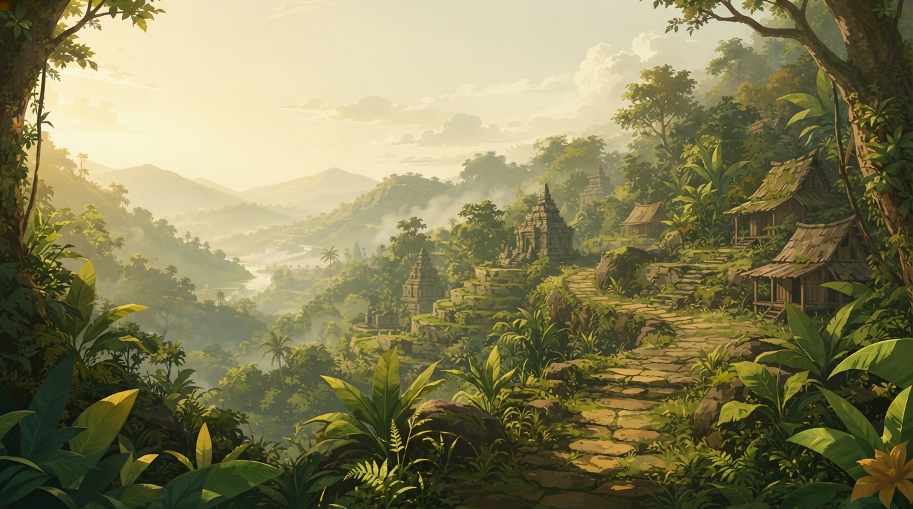

LOKASI 03
Pasir Luhur
PROGRESS
00 / 05

PERJALANAN 03
LOKASI 03
Pasir
Luhur
Kamandaka melanjutkan perjalanan menuju Pasir Luhur. Di tempat ini, ia menemukan berbagai benda dan jejak yang dapat memberikan petunjuk tentang kehidupan masyarakat pada masa lalu.
Tujuan
Temukan 5 benda yang tersembunyi
dan pelajari kaitannya dengan
kehidupan serta budaya masyarakat Jawa.